Next: General (non-symmetric) triangle wave
Up: Fourier series of the
Previous: Parabolic wave
Contents
Index
Figure 10.6:
Symmetric triangle wave, obtained by superposing parabolic waves with
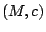 pairs equal to 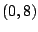 and  .
.
| 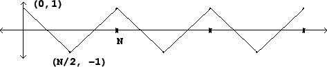 |
To see how to obtain Fourier series for classical waveforms in general,
consider first the square wave,
equal to  for the first half cycle (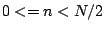) and 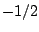 for the rest.
We get the Fourier series by plugging in the Fourier series for
for the first half cycle (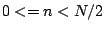) and 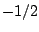 for the rest.
We get the Fourier series by plugging in the Fourier series for ![$s[n]$](img1311.png) twice:
twice:
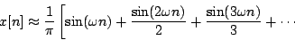
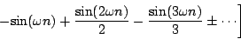
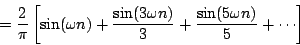
The symmetric triangle wave (Figure 10.6) given by
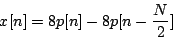
similarly comes to
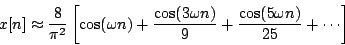
Miller Puckette
2006-12-30